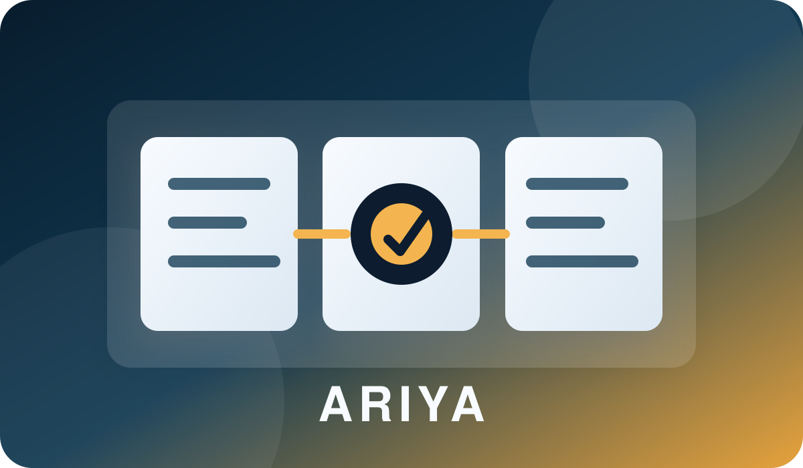

Project Details
Ariya
A private AI workbench for macOS, iOS, and local automation.

Overview
Ariya is a private internal tool I built to bring assistant workflows, local memory, project context, chat history, terminal sessions, and cross-device access into one system. It is not a public product; the source remains private because it integrates personal workflows and local infrastructure.
What it does
- Runs native macOS and iOS clients backed by a local Node.js control plane.
- Maintains persistent chat and agent sessions across devices.
- Connects assistant workflows to local wiki memory, uploaded files, inventory data, canvas diagrams, and terminal sessions.
- Supports developer-focused rebuild tooling so the app can be updated quickly while being used.
Engineering focus
The project emphasizes practical AI infrastructure: session persistence, provider routing, local-first data ownership, UI responsiveness, safe tool access, and workflows that stay useful across desktop and mobile contexts.